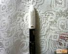
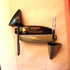
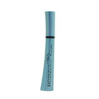

女生化妆包包里什么都能缺,但睫毛膏一定不能没有...平时在化装的时候哪怕什么都不化...但只要你刷一点睫毛膏就能立刻使你的眼睛和整个人精神起来...这是我的经验....哈
...我推荐大家用欧莱雅的这几款睫毛膏...我是它们忠实的拥护者...是我用过睫毛膏当中效果最好...对睫毛最滋润...价格也是最实惠的...也最不容易干的
能让美睫显著增长；双重刷头在2步使用后，使膏体均匀覆盖在每一根睫毛上，让睫毛根根分明不结块，不在眼睑上沾染一丝痕迹；双效配方还能令睫毛深度滋养，更显著增长60%！在滋养加长睫毛的同时，不会伤害睫毛！
睫毛膏使用方法：
上睫毛：从睫毛根部由下往上轻轻刷拭一层睫毛膏，可在眼尾处适当加深，使效果更加撩人。如要达到更为浓丽的眼妆效果， 则可多刷几遍。
下睫毛：将睫毛刷竖起，用刷头以Z字型左右来回刷拭

